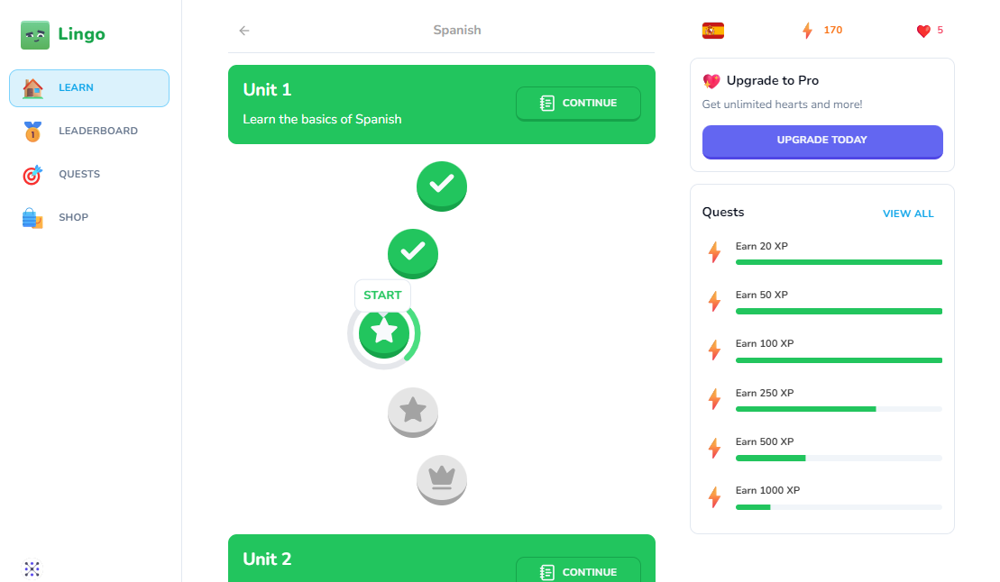
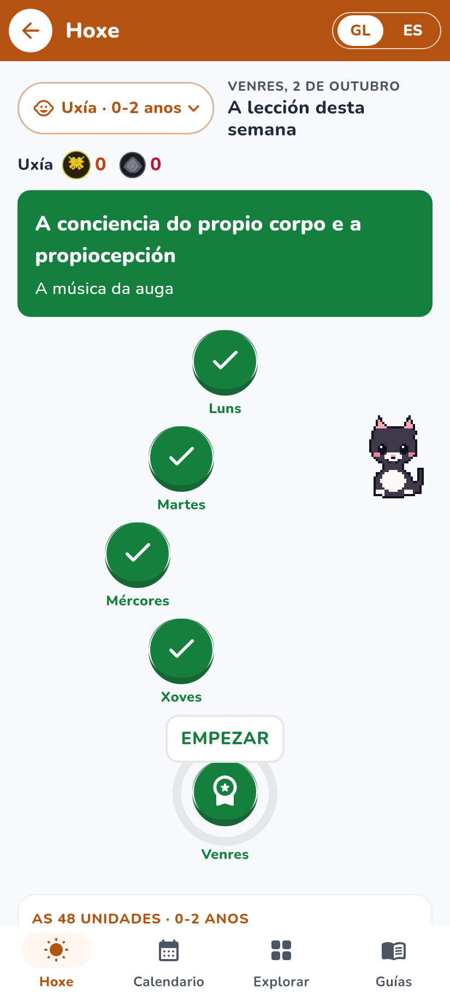
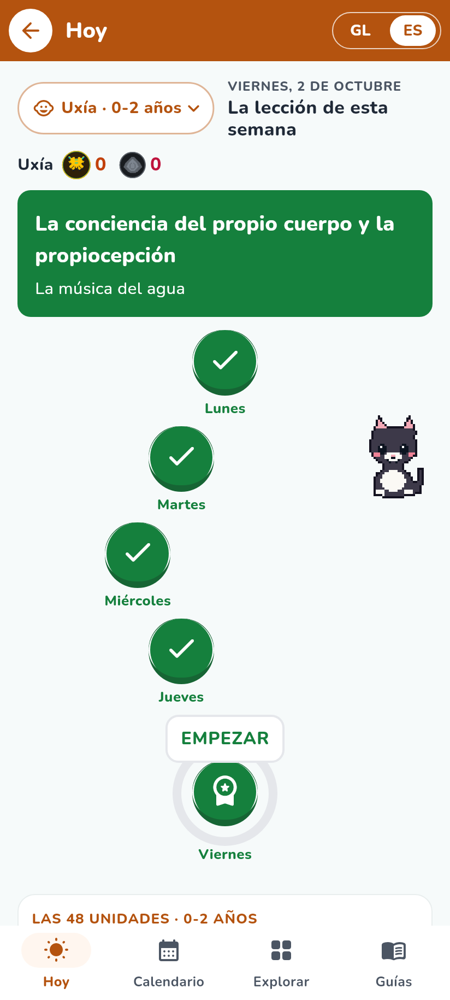
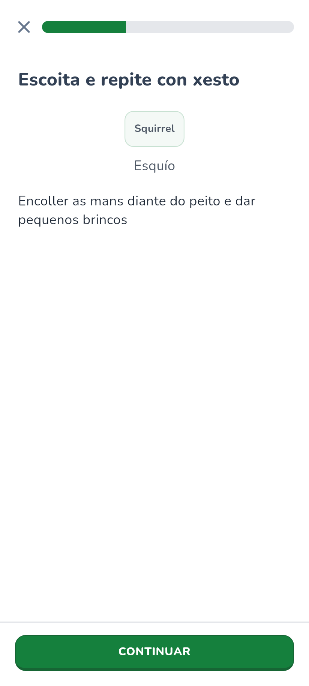
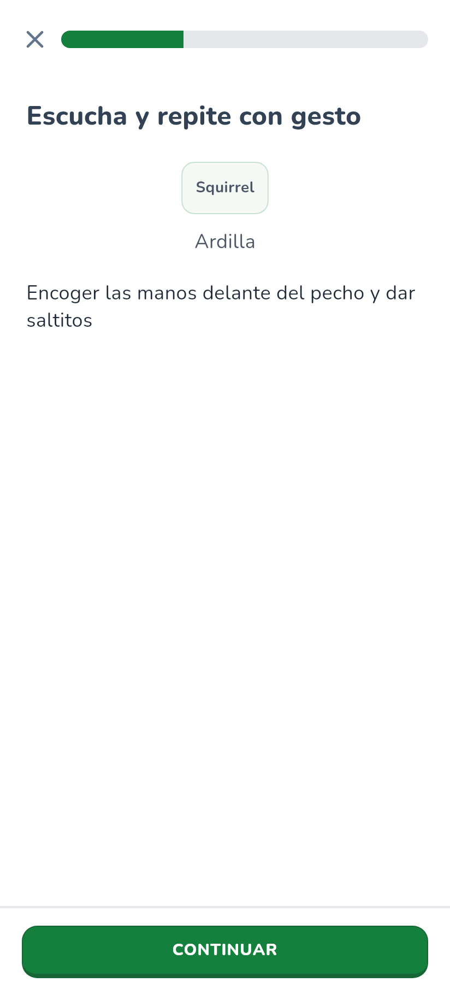
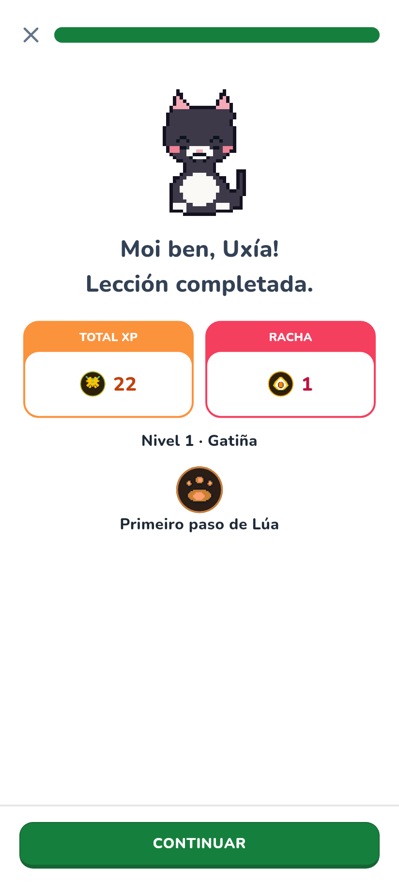
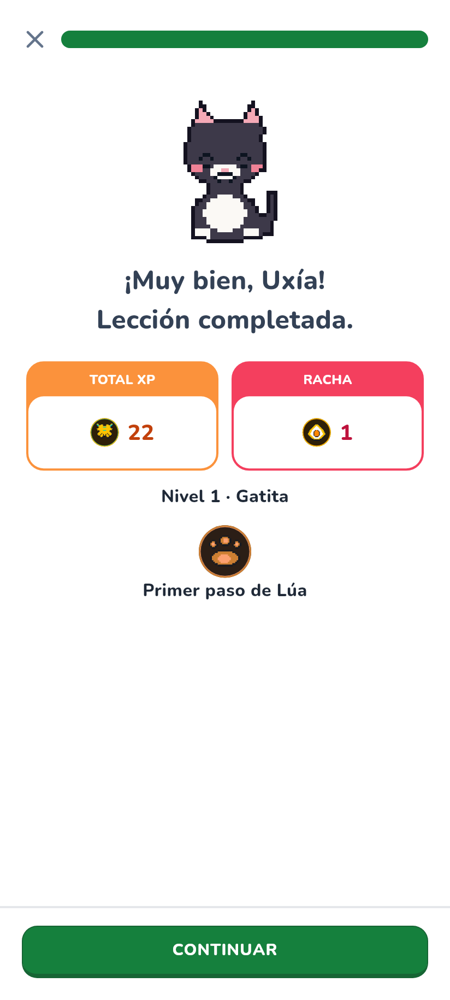

O-20261109-5 · La pantalla «Learn» de Duolingo, lado a lado
Fuente: sanidhyy/duolingo-clone (licencia MIT), captura de su README. A la derecha, Descubre con Lúa: Hoy de casa, un paso de la lección y el fin.

duolingo-clone · Learn (fuente)

Descubre con Lúa · Hoxe (gl)

Descubre con Lúa · Hoy (es)
La lección y el fin

Paso con barra y Continuar (gl)

Paso con barra y Continuar (es)

Fin: Total XP y premio de Lúa (gl)

Fin: Total XP y premio de Lúa (es)